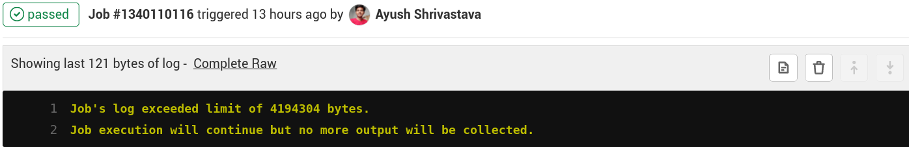

Crossing the Multimodule CI Frontier at GitLab
“Great things are done by a series of small things brought together”
The GitLab CI
Hi, you must have gone through this post by Jason Lenny for setting up CI for android projects at GitLab, it works pretty well till you have single project i.e., don’t have nested/sub-projects or don’t install NDK in the runtime at GitLab CI. When either of the case occurs, it becomes somewhat tricky to write a robust and clean CI script for the android project. Obviously, there are solutions to this problem, I am going to write the one that we followed in our project irde.st.
Challenges
First of all let’s see the problems that arise:
- With the multimodular project, it seems difficult to run different ci files from the top level one(the one that sits at the root of the project).
- Specifically with NDK installation at CI, what happens is that the installation process is very verbose that fills up the entire logs console(or better to say, it kinda spams the log output) and version control platforms have an upper limit of logs to display in console set, after which it doesn’t show the output. This NDK installation coupled with the SDK installation process that you carry out for preparing the android-build-env(if you use a plain JDK 8 docker image), also adds to the log spam, most of which is irrelevant (if you have your environment variables set correctly) and what matters then the most is the output/logs generated when you run the Build, Test, StaticAnalysis checks and find where any of the checks fail, but due to limited logs being displayed in the console it becomes difficult or almost impossible.

Logs in GitLab are displayed to a specific size-
The solution for problem #1 over the internet isn’t clearly given anywhere, there are just vague mentions of do like this and it’ll work, here we’ll see how to actually implement the desired fix.
-
For problem #2, I haven’t seen any blog that targets our problem and explains + implements the fix. It is a real serious problem with log collection.
Rough Architectural Overview of Irdest - A Multimodular Project
So Irdest had both the problems initially, i.e., it is a multi-modular project that comprises of native rust library and clients hubd, docker & android. The project is structured in such a way that rust library lies at the root of the repository and hubd, docker & android are the parallel layers inside the rust library; also, we use NDK to use rust library on our android client– irdest-droid.
Solution - A Blueprint
- The solution to problem #1 is fairly simple, we just need to
includethe CI file from sub-projects in our main CI file(.gitlab-ci.yml), add atriggersstage in the top of the main CI file. Note that you need to include the file when you trigger the new job for your sub-project to be run at CI. An example:
stages:
- build
- test
- triggers # note this new stage
build-android-app: #custom name for job
stage: build
trigger: # triggers the job
include: 'clients/android/irdest-android-ci.yml' # path to ci file of your sub-project, also note the single quotes in path
In the trailing snippet, note that only including the ci file from sub-project is sufficient enough to get the jobs run that it contains. It is needless to
executethe file manually or write a script for the same
Also note that, you need not worry about the contents of the ci file in sub-project, it does not demand any special modification(s), just write it normally as you have did if it were a single isolated android project. Anyways, the contents of the ci file irdest-android-ci.yml
# Pull a plain Docker image that is a Debian OS with JDK installed
image: openjdk:8-jdk
variables:
# ANDROID_COMPILE_SDK is the version of Android you're compiling with.
# It should match compileSdkVersion from your build.gradle file.
ANDROID_COMPILE_SDK: "29"
# ANDROID_BUILD_TOOLS is the version of the Android build tools you are using.
# It should match buildToolsVersion from your build.gradle file.
ANDROID_BUILD_TOOLS: "29.0.3"
# It's what version of the command line tools we're going to download from the official site.
# Official Site-> https://developer.android.com/studio/index.html
# There, look down below at the cli tools only, sdk tools package is of format:
# commandlinetools-os_type-ANDROID_SDK_TOOLS_latest.zip
# when I modified the script for the project, it was which is written down below
ANDROID_SDK_TOOLS: "6514223"
# Packages installation before running script
before_script:
- cd clients/android
- apt-get update --yes
- apt-get install --yes wget tar unzip lib32stdc++6 lib32z1
# Setup path as android_home for moving/exporting the downloaded sdk into it
- export ANDROID_HOME=${PWD}android-home
- install -d $ANDROID_HOME
# Here we are installing android SDK tools from official source,
# (the key thing here is the url from where you are downloading these sdk tool for command line, so please do note this url pattern there and here as well)
# after that unzipping those tools and
# then running a series of SDK manager commands to install necessary android SDK packages that'll allow the app to build
- wget --output-document=$ANDROID_HOME/cmdline-tools.zip https://dl.google.com/android/repository/commandlinetools-linux-${ANDROID_SDK_TOOLS}_latest.zip
# move the archive to ANDROID_HOME
- pushd $ANDROID_HOME
- unzip -d cmdline-tools cmdline-tools.zip
- popd
- export PATH=$PATH:${ANDROID_HOME}/cmdline-tools/tools/bin/
# Nothing fancy here, just checking sdkManager version
- sdkmanager --version
# temporarily disable checking for EPIPE error and use yes to accept all licenses
- set +o pipefail
- yes | sdkmanager --sdk_root=${ANDROID_HOME} --licenses
- set -o pipefail
- sdkmanager --sdk_root=${ANDROID_HOME} "platforms;android-${ANDROID_COMPILE_SDK}"
- sdkmanager --sdk_root=${ANDROID_HOME} "platform-tools"
- sdkmanager --sdk_root=${ANDROID_HOME} "build-tools;${ANDROID_BUILD_TOOLS}"
- echo "y" | ${ANDROID_HOME}/tools/bin/sdkmanager --install "ndk;21.1.6352462" --sdk_root=${ANDROID_HOME} # use this if your project *really* uses NDK
# Not necessary, but just for surity
- chmod +x ./gradlew
# Check linting
lintDebug:
interruptible: true
stage: build
script:
- ./gradlew -Pci --console=plain :app:lintDebug -PbuildDir=lint
# Make Project
assembleDebug:
interruptible: true
stage: build
script:
- ./gradlew assembleDebug
artifacts:
when: always
paths:
- clients/android/app/build/outputs/
- clients/android/logs.txt
# Run all tests, if any fails, interrupt the pipeline(fail it)
debugTests:
interruptible: true
stage: test
script:
- ./gradlew -Pci --console=plain :app:testDebug
So this is how the first problem is fixed.
- Now coming to the second problem, which is about not letting our logs console being spammed. If your project uses NDK and you straightaway paste the trailing script, then it’ll output the image attached previously as logs will exceed the maxim memory limit. Also I’m saying it spamming, because logs are just filled download progress of NDK(means how many per-cent it has been downloaded) and consumes the memory, we don’t want to waste space seeing NDK download process which we know is going to pass for sure :P, we can simply by-pass it and other verbose download process of support tools, via passing
--quietflag in their installation command. Let’s see an example:
before_script:
- cd clients/android # we have to move to correct dir before running CI on android project
- apt-get --quiet update --yes # see here
- apt-get --quiet install --yes wget tar unzip lib32stdc++6 lib32z1 # here
- export ANDROID_HOME=${PWD}android-home
- install -d $ANDROID_HOME
- wget --quiet --output-document=$ANDROID_HOME/cmdline-tools.zip https://dl.google.com/android/repository/commandlinetools-linux-${ANDROID_SDK_TOOLS}_latest.zip # here
- If you are much concerned about that download progress or want to see how it goes, then you can simply get its output collected in a file that you can download as artifacts from GitLab CI(a big thanks to Milan for helping me out in uploading artifacts to GitLab :pray:).
Consider this patch:
# write download progress to a file
- echo "y" | ${ANDROID_HOME}/tools/bin/sdkmanager --install "ndk;21.1.6352462" --sdk_root=${ANDROID_HOME} 2>&1 >> logs.txt
# Create a new job to upload artifacts(we can combine this step with build/lint, via uploading APK + Reports together)
uploadArtifacts:
stage: build
artifacts:
when: always
paths:
- clients/android/logs.txt # path where file being exported to
You can learn about redirection syntax here.
Now that we have android CI tools installed, we can simply run build commands and expect the output. For jobs we can also collect their reports/results as artifacts from GitLab CI via adding a step in our corresponding job. Collection and artifact uploading should be done after the job finishes. Let’s see an example:
# Run Lint
Run Lint:
interruptible: true
stage: build
# It automatically writes reports app/lint/ as HTML & XML files
script:
- ./gradlew -Pci --console=plain :app:lintDebug -PbuildDir=lint
artifacts:
when: always
paths:
- "**/reports/" # specify path where to upload, note double quotes in wildcard pattern
# Make Project
Build Application & Generate APK:
interruptible: true
stage: build
script:
- ./gradlew assembleDebug
artifacts:
paths:
- clients/android/app/build/outputs/
Now you’ll be able to download artifacts from GitLab CI :) So this is how we fixed the second problem, yayy!
With all this script written in CI file, it gets a bit messy and since we use it in all our pipelines, so at irde.st we have packaged all this android tools stuff in a docker image(with all due respect and effort from spacekookie), pull it in our CI runtime and then simply after changing the directory execute build/lint/test commands. See the docker image here: irdest/android-build-env. Feel free to use it, but be aware that the NDK version that we use in this image is 21.1.6352462, you should reconsider if yours is different, otherwise it can break stuff.
The changed CI file for sub-project, after we use the image mentioned above:
# Our ultimately orz docker image
image: irdest/android-build-env
# Move to android dir before running CI on it
before_script:
- pwd
- cd clients/android # don't forget moving to correct dir
- ls
# Run Lint
Run Lint:
interruptible: true
stage: build
script:
- ./gradlew -Pci --console=plain :app:lintDebug -PbuildDir=lint
artifacts:
when: always
paths:
- "**/reports/"
# Make Project
Build Application & Generate APK:
interruptible: true
stage: build
script:
- ./gradlew assembleDebug
artifacts:
paths:
- clients/android/app/build/outputs/
# Run all tests, if any fails, interrupt the pipeline(fail it)
Run Unit Tests:
interruptible: true
stage: test
script:
- ./gradlew -Pci --console=plain :app:testDebug
I’ll mention all the involved files/links here for your convenience
- The docker image: irdest/android-build-env
- Android-project level CI file, without custom docker image: s-ayush2903/irdest/clients/android/.gitlab-android-ci.yml
- Android-project level CI file, with our custom docker image: s-ayush2903/irdest/clients/android/irdest-android-ci.yml
- Top level CI file: s-ayush2903/irdest/clients/android/.gitlab-ci.yml
- The MR that proposed these changes to the upstream: we/irdest !13
So that’s all about for setting up Android CI with NDK at GitLab in a (native)multimodular project. I’ll write more when find something interesting. And Thanks a lot for reading!
~ Cheers until we meet next time! 🥂